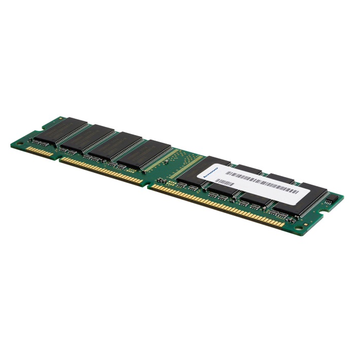
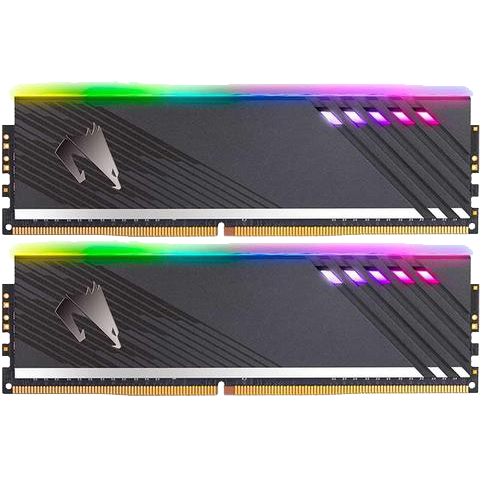

RAM
RAM edo Random Access Memory (Ausazko Sarbidedun Memoria) bai irakurri eta bai idazteko aukera eskaintzen duen memoria da. Memoria hegazkorra da, korrontea kentzean bere edukia ere galtzen du beraz. Normalean denbora baterako memoria bezala erabiltzen da, datu ez iraunkorrekin.
FPM-RAM (Fast Page Mode RAM): memoria honek denbora aurrezteko metodoa proposatu zuen. Memoriaren kontrolagailua bide batetik bidaltzen du informazioa eta bertatik jasotzen du hura eta beste kontsekutiboak. Adibide batez azalduta, kale bateko etxe guztiak segidan bisitatu bezala izango zen. 60 edo 70 ns denborekin fabrikatzen ziren eta oso popularrak izan ziren 486 eta lehenengo Pentium-etan.
EDO-RAM (Extended Data Output RAM): aurrekoaren hobekuntza moduan, 1995ean atera zen. 30 edo 40 ns denbora sarrerak erabiltzen zituen. Berezitasun bat da hurrengo informazioaren bidea hautematen duela azakarrago eragiteko.
Oraingo memoria teknologia sinkronizazio-seinale bat erabiltzen du irakurri eta idazteko, non beti sinkronizatuta dagoen memoria bus batera. Aurreko guztian kontrakoan, asinkronoak zirela.
Konputagailuaren memorien jerarkian RAM memoria prozesagailuarenaren eta katxeen atzetik dago abiadurari dagokionez. Memoria modulu orok memoria kontrolagailu bateri elektronikoki lotuta daude eta honek DRAM integratuen sarrera eta irteera seinaleak kudeatzen ditu. Seinaleak hiru motatakoak izan daitezke: helbideraketa, datuak eta kontrol seinaleak. Seinaleak bi multzotan (bus-etan) sailkatzen dira, kontrola eta hornikuntza. Hauen artean bus de memoria delakoa osatzen dute RAM-a bere kontrolagailuarekin lotzen duena.
 